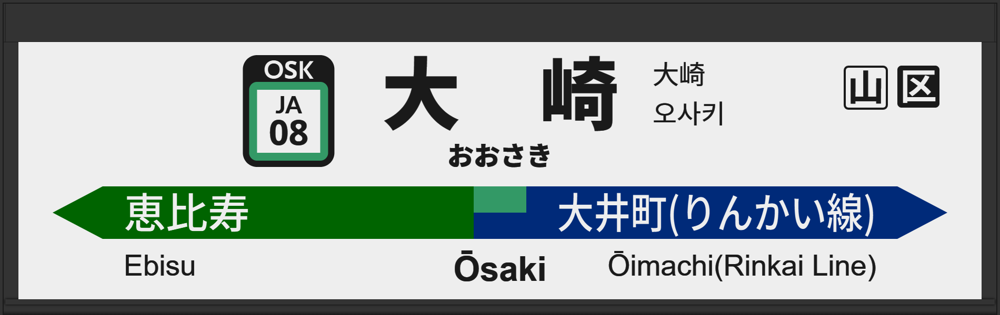

| ←恵比寿 | ■ 埼京線 |
|---|
2002年12月、開業とともに旧型ATOS放送を導入。
2004年9月には常磐初期型に更新。
2017年9月に宇都宮型に更新され、5・7番線の声優が津田英治氏から田中一永氏に交代。
2020年1月に宇都宮改良型に更新された。
2025年2月に5番線の発車メロディが「JRE-IKST-018-2」へ、6番線は「JRE-IKST-006-1」、7番線は「JRE-IKST-006-2」、8番線は「JRE-IKST-018-2」に変更。
| 5 |
■ りんかい線 ■ 湘南新宿ライン 新木場方面 大船方面 |
5番線次発予告 5番線接近放送 |
旧型でした。 放送は「」です。 |
|---|---|---|---|
| 6 |
■ 埼京線 ■ りんかい線 大宮方面 新木場方面 |
6番線次発予告 6番線接近放送 |
旧型でした。 放送は「」です。 |
| 7 |
■ 埼京線 ■ りんかい線 大宮方面 新木場方面 |
7番線次発予告 7番線接近放送 |
旧型でした。 放送は「」です。 |
| 8 |
■ 埼京線 ■ りんかい線 ■ 湘南新宿ライン 大宮方面 新木場方面 |
8番線次発予告 8番線接近放送 |
旧型でした。 放送は「普通 宇都宮行」です。 |